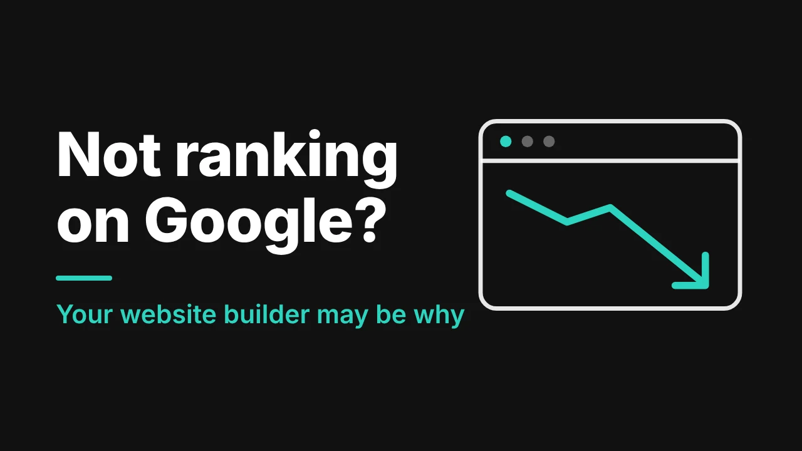

You paid for a website. It looks fine. But when someone in Calgary or Dallas searches for a cleaner, your company is nowhere to be seen, and a competitor with a plainer site is sitting at the top.
If your site was built on Wix, GoDaddy or Squarespace, that is not a coincidence. These tools are great for getting online fast. They are not always great for getting found. Below is what usually goes wrong, a 10-minute check you can do today, and what to do about it.
How Google picks local cleaning companies
Google says local results are mainly based on relevance, distance and prominence. In plain words: how well you match the search, how close you are to the person searching, and how well known you are. Being well known depends partly on how many websites link to you and how many reviews you have. Google also says there is no way to request or pay for a better local ranking.
You can't change distance. You can change the other two, and your website is where most of that work happens.
Reason 1: One "Services" page instead of a page for each service
Most builder templates come with Home, About, Services and Contact. That is it. So house cleaning, move-out cleaning, office cleaning and carpet cleaning all sit on one page, and Google can't tell which one you are really good at.
In Whitespark's 2023 survey of 44 local SEO experts (reported by Search Engine Land), a dedicated page for each service was at the top of the list for regular local search results. A page called "Move-Out Cleaning in Calgary" usually does better than a bullet point on a shared page.
The fix: one page for every service you sell, and one page for every area you serve.
Reason 2: It is slow on a phone
Most people hunting for a cleaner are on their phone, often in a hurry. Expert Market's speed tests across 200 websites gave Wix an average mobile score of 63 out of 100, GoDaddy 67 and Squarespace 47. Your own site may score higher or lower, but it shows the pattern. Google's own advice is to reduce delays and give people a good page experience on every device.
A slow site doesn't only hurt your ranking. Visitors give up and call the next company on the list.
Reason 3: You can't reach the settings that matter
Builders keep things simple on purpose. That helps on day one and limits you later. In Expert Market's testing, GoDaddy had no support for structured data (schema) and no control over sitemaps or robots.txt files. (Schema is the hidden label that tells Google your business name, area and services.) Squarespace was marked down for a fixed blog and product URL structure, and Wix for limited template switching once a site is live.
None of this matters if you are the only cleaner in a small town. It matters a lot when 40 companies are chasing the same search.
Reason 4: Your words sound like everyone else's
Templates come with filler text, and many owners fill the gaps with lines like "we provide top quality cleaning at affordable prices." Google's own guide to its AI search features says unique, helpful content will likely matter more in the long run than any other tip it lists.
Your customers want to know about your crew, your products, how you handle keys and alarm codes, and what you do about pets. That is what sets you apart, and it is what gets read.
Reason 5: Built once, then left alone
Builders make launching so easy that many sites are built once and never touched again. No new service pages. No new photos. No fresh local links. Meanwhile your competitors keep adding to theirs. Rankings aren't a trophy you win once. They are a race that doesn't end.
So can a builder site rank at all?
Yes, sometimes. Expert Market found that both Wix and Squarespace cover all 21 of the SEO features it checks for, and in a small town with little competition a builder site can do fine.
But if you are in Calgary, Edmonton, Dallas or any big metro, you are up against companies that built their sites to win. That is where the ceiling shows up.
A 10-minute check you can do today
- Search "[your service] + [your city]" on your phone. Do you show up in the map results? In the regular results?
- Open your website on your phone. How long before you can read it? Can you tap your phone number straight away?
- Count your pages. Is there a separate page for each service and each area?
- Paste your web address into Google's free PageSpeed Insights tool. Is the mobile score in the red?
- Read your homepage out loud. Could another cleaning company copy it word for word? If yes, it is too generic.
Three or more problems? Your site is probably costing you jobs.
What to do about it
You have two options.
Fix it where it is. Add service and area pages, shrink your images, rewrite the generic text, and complete your Google Business Profile. This works if the builder isn't blocking you.
Move to a custom-built site. This is the better route once you hit the limits above: speed, control and structure. A careful move keeps your existing pages and rankings safe. We explain exactly how in How to Move a Cleaning Company Website Off Wix Without Losing Your Rankings.
A simple rule: if you can fix most problems in a weekend, fix them in place. If you need things the builder won't let you do, rebuild.
This is the work we do every week. We handle web design for cleaning companies and the local SEO for cleaning companies that goes with it. You can see what a site built to rank looks like in our recent cleaning website designs. If you want to know what a rebuild costs, read how much a cleaning company website costs. For a full list of what the new site needs, see the pages every cleaning company website needs. And if your current site gets visitors but no calls, start with why your website isn't getting quote requests.